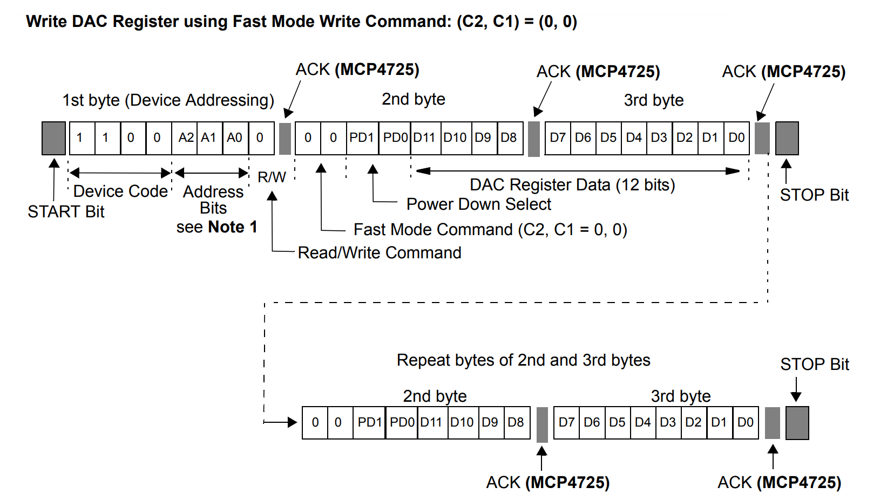

การออกแบบวงจรดิจิทัลสำหรับ FPGA เพื่อใช้งานโมดูล MCP4725 I2C DAC#
Keywords: Digital Logic Design, VHDL, Intel / Altera FPGA, Quartus Prime, MCP4725 DAC, I2C, IP Core
▷ MCP4725: 12-bit I2C DAC#
MCP4725 เป็นไอซีประเภท DAC (Digital to Analog Converter) ของบริษัท Microchip Technology Inc. ใช้สำหรับการแปลงข้อมูลดิจิทัล 12 บิต ให้เป็นสัญญาณแอนะล็อก และใช้บัส I2C ที่มีสัญญาณ SCL และ SDA ในการสื่อสารข้อมูลกับชิปตัวอื่น เช่น ไมโครคอนโทลเลอร์ เป็นต้น สำหรับรายละเอียดเกี่ยวกับ MCP4725 แนะนำให้ศึกษาจากบทความ "การใช้งานโมดูล MCP4725 DAC (Digital-to-Analog Converter)"
ข้อมูลเชิงเทคนิคที่สำคัญของไอซีมีดังนี้
- แรงดันไฟเลี้ยง (VDD) สำหรับไอซี: 2.7V ~ 5.5V
- ถ้านำไปใช้ร่วมกับบอร์ด FPGA หรือ ไมโครคอนโทรลเลอร์ เช่น ESP32 ให้ใช้ VDD = 3.3V
- ข้อมูลมีความละเอียด (Bit Resolution): 12 บิต
- ช่วงแรงดันเอาต์พุต: 0V ~ VDD (Rail-to-Rail Output)
- เชื่อมต่อด้วยบัส I2C สำหรับการเขียนโปรแกรมควบคุมการทำงานของไอซี
- ความเร็วของบัส I2C
- Standard-speed mode: 100kHz
- Fast-speed mode: 400kHz
- High-speed mode: 3.4MHz
- มีขา A0 (1-Bit Address Pin) สำหรับกำหนดค่าบิตของอุปกรณ์
- มีหมายเลขอุปกรณ์เลือกได้คือ:
0x60(A0=0) หรือ0x61(A0=1)
- มีหมายเลขอุปกรณ์เลือกได้คือ:
การเขียนข้อมูลเพื่อใช้เป็นเอาต์พุตของ MCP4725 มีหลายรูปแบบ คือ
- เขียนข้อมูลลงใน EEPROM (ข้อมูลไม่สูญหายเมื่อปิดไฟเลี้ยง)
- เขียนข้อมูลลงในรีจิสเตอร์ของ DAC
- เขียนข้อมูลลงใน EEPROM และ DAC Register
รูป: ข้อมูลบางส่วนจาก Datasheet ของไอซี MCP4725
ในบทความนี้ วงจรดิจิทัลใน FPGA ทำหน้าที่เป็น I2C Master และ MCP4725 ทำหน้าที่เป็น I2C Slave
การส่งข้อมูลไปยัง MCP4725 จะใช้วิธีเขียนข้อมูลแบบ Fast Mode Write Command ลงในรีจิสเตอร์ของ DAC เท่านั้น ซึ่งมีหลักการทำงานดังนี้
- การส่งข้อมูลด้วยบัส I2C จะต้องเริ่มต้นด้วยการส่งสัญญาณ I2C START Condition แล้วตามข้อมูลไบต์ แล้วจบด้วย I2C STOP Condition
- การส่งข้อมูลไปยัง MCP4725 ในตัวอย่างนี้ เป็นการเขียนข้อมูลเพียงอย่างเดียว Write Operation ไม่มีการอ่านข้อมูล (Read Operation)
- ไบต์แรกซึ่งเรียกว่า Address Byte มีแอดเดรสของอุปกรณ์ขนาด 7 บิต (
0x60) และบิตR/W=0ซึ่งบ่งบอกว่า จะเขียนข้อมูล ดังนั้นไบต์แรกคือ1100_0000(bin) ซึ่งมีบิตA2 A1 A0 = 0 0 0 - ไบต์ที่สองประกอบด้วย 4 บิต
0000(C2C1PD1PD0ตามลำดับ) สำหรับคำสั่ง และ 4 บิต (D11..D8) ของข้อมูล 12 บิต เพื่อใช้เป็นเอาต์พุตของ DAC - ไบต์ที่สามคือ 8 บิต (
D7..D0) ที่เหลือของข้อมูล 12 บิต - แต่ถ้าต้องการส่งข้อมูลต่อเนื่องครั้งละ 2 ไบต์ (ไม่ต้องส่งไบต์แอดเดรส) ไปยัง DAC ก็ทำได้ โดยยังไม่ต้องส่ง STOP Condition

รูป: ลำดับการส่งข้อมูลต่อเนื่องไปยัง MCP4725 ในโหมด Fast Mode Write Command
▷ I2C Master (VHDL)#
โดยทั่วไปแล้ว โมดูล MCP4725 นิยมใช้กับไมโครคอนโทรลเลอร์ และในกรณีที่เขียนโค้ดด้วย Arduino
ก็มีไลบรารี Wire
และไลบรารีสำหรับ MCP4725 เพื่อความสะดวกและง่ายต่อการเขียนโค้ด เช่น
บทความนี้นำเสนอตัวอย่างการทดลองใช้งานชิป MCP4725 (ใช้โมดูล GY-4725) ร่วมกับบอร์ด FPGA และสาธิตการเขียนโค้ด VHDL เพื่อออกแบบวงจรดิจิทัล โดยเลือกใช้งาน IP Core ที่ทำหน้าที่เป็น I2C Master สำหรับการส่งข้อมูลผ่านบัส I2C ไปยังไอซี MCP4725
i2c_master.vhdเป็นไฟล์ IP Core สำหรับ I2C Master- ดูคำอธิบายการใช้งานได้จาก DigiKey Tech Forum: I2C Master (VHDL)
รูป: การเชื่อมต่อระหว่าง I2C Master IP Core กับวงจรของผู้ใช้ (User Logic)
รูป: ขา I/O ของ I2C Master IP Core
รูป: VHDL Entity ของ I2C Master IP Core
สัญญาณ ena เป็นสัญญาณอินพุตควบคุม ถ้าเป็นลอจิก 1 จะทำให้ I2C Master
เริ่มทำงาน โดยอ่านค่า 7 บิตจากสัญญาณอินพุต addr ซึ่งจะมีค่า 0x60 สำหรับอุปกรณ์ MCP4725
และจะต้องกำหนดค่าลอจิกให้สัญญาณอินพุต rw ซึ่งเป็นบิตสำหรับเลือกว่า จะเขียนหรือจะอ่านข้อมูล
ในตัวอย่างนี้เป็นการส่งข้อมูลเท่านั้น ดังนั้นสัญญาณอินพุต rw จึงเป็นลอจิก 0
และจะต้องกำหนดค่า 8 บิต ให้สัญญาณอินพุต data_wr เพื่อการเขียนข้อมูลไบต์และเป็นข้อมูลไบต์ตัวที่สอง
เมื่อเริ่มต้นการทำงานหลังจากกำหนดให้ ena เป็นลอจิก 1 แล้ว สัญญาณเอาต์พุต busy จะเปลี่ยนเป็นลอจิก 1
จากนั้นจึงมีการส่งสัญญาณที่เรียกว่า START Condition ตามด้วยไบต์แรก (หรือ Address Byte)
เมื่อได้รับบิตที่เรียกว่า ACK (หรือ Acknowledge Bit) หลังจากส่งไบต์แรกแล้ว ก็จะส่งไบต์ที่สองถัดไป
แต่ถ้าสัญญาณ ack_error เป็นลอจิก 1 แสดงว่า ไม่ได้รับสัญญาณบิต ACK จากไอซี MCP4725
มีความผิดพลาดเกิดขึ้น ให้จบการเขียนข้อมูลไปยังไอซี
เมื่อได้รับบิตที่เรียกว่า ACK (ค่าของ ack_error เป็นลอจิก 0) หลังจากส่งไบต์ที่สองแล้ว
ก็จะส่งไบต์ที่สามถัดไป ดังนั้นจึงต้องอัปเดตค่าให้กับสัญญาณอินพุต data_wr เพื่อใช้เป็นข้อมูลไบต์ถัดไป
แล้วรอตรวจสอบสัญญาณ ack_error เพื่อดูว่า ได้รับบิต ACK หรือไม่
เมื่อส่งข้อมูลครบสามไบต์ เพื่ออัปเดตค่าให้เอาต์พุตของ MCP4725 DAC ในหนึ่งรอบ
ก็ให้สัญญาณ ena เป็น 0 เพื่อจบการส่งข้อมูลไปยังไอซี ซึ่งจะจบด้วยการสร้างสัญญาณที่เรียกว่า STOP Condition
▷ ตัวอย่างการเขียนโค้ด VHDL สาธิตการใช้งาน I2C Master สำหรับ MCP4725#
โค้ด VHDL ต่อไปนี้สาธิตการใช้งาน I2C Master IP Core โดยสร้างวงจรในส่วน User Logic
เพื่อเขียนข้อมูลไปยังไอซี MCP4725 ความถี่ของสัญญาณ Clock ของบอร์ด FPGA ที่ใช้คือ 50MHz
และความถี่ของบัส I2C ก็ถูกกำหนดด้วยค่าคงที่ I2C_CLK_SPEED เช่น ลองเลือกค่าต่อไปนี้ในการทดลอง
100_000(100kHz)400_000(400kHz)1_000_000(1MHz)
ข้อมูลที่จะนำไปใช้สำหรับ DAC Output ได้จากข้อมูลถูกคำนวณและเก็บเอาไว้ในตาราง หรือ อาร์เรย์ที่มีชื่อว่า
sample_table มีจำนวนข้อมูล 2^M = 256 (M=8) และใช้ sample_index
เป็นตัวเลือกข้อมูลในอาร์เรย์ดังกล่าว sample_index จะมีค่าเพิ่มขึ้นทีละหนึ่ง อยู่ในช่วง 0 ถึง 255 และวนซ้ำใหม่
File: mcp4725_dac.vhd
library ieee;
use ieee.std_logic_1164.all;
use ieee.numeric_std.all;
use ieee.math_real.all;
entity mcp4725_dac is
port (
NRESET : in std_logic;
CLK : in std_logic;
I2C_SDA : inout std_logic;
I2C_SCL : inout std_logic;
STATUS : out std_logic
);
end mcp4725_dac;
architecture behavior of mcp4725_dac is
-- 7-bit I2C device address for MCP4725 (0x60)
constant I2C_ADDR : std_logic_vector(6 downto 0) := "1100000";
constant I2C_CLK_SPEED : integer := 1_000_000; -- I2C speed
constant BW : integer := 12; -- 12 bits for DAC output
constant M : integer := 8;
constant MAX_INDEX : integer := 2 ** M - 1;
subtype sample_t is std_logic_vector((BW - 1) downto 0);
type sample_table_t is array(0 to MAX_INDEX) of sample_t;
function init_table return sample_table_t is
variable LUT : sample_table_t;
variable x : REAL;
begin
for i in 0 to MAX_INDEX loop
-- staircase function (16 levels)
LUT(i) := std_logic_vector(to_unsigned(i mod 16, 4)) & x"ff";
end loop;
return LUT;
end function;
signal sample_table : sample_table_t := init_table;
signal sample_index : integer range 0 to MAX_INDEX := 0;
type state_type is (ST_IDLE, ST_START, ST_WR_1, ST_WR_2, ST_STOP);
signal state : state_type := ST_IDLE;
signal busy : std_logic;
signal ack_error : std_logic;
signal ena : std_logic := '0';
signal rw : std_logic := '0';
signal data_wr : std_logic_vector(7 downto 0);
signal data_buffer : std_logic_vector(15 downto 0);
signal busy_prev : std_logic_vector(1 downto 0);
signal wait_cnt : integer := 0;
begin
-- I2C Master Instantiation
i2c_master_inst : entity work.i2c_master
generic map (
input_clk => 50_000_000, -- Assume system clock of 50 MHz
bus_clk => I2C_CLK_SPEED
)
port map (
clk => CLK,
reset_n => NRESET,
ena => ena,
addr => I2C_ADDR,
rw => rw,
data_wr => data_wr,
busy => busy,
ack_error => ack_error,
sda => I2C_SDA,
scl => I2C_SCL
);
STATUS <= busy; -- Use the STATUS output to monitor the busy signal
process (NRESET, CLK)
begin
if NRESET = '0' then
state <= ST_IDLE;
ena <= '0';
rw <= '0';
busy_prev <= (others => '0');
sample_index <= 0;
wait_cnt <= 10000;
elsif rising_edge(CLK) then
busy_prev <= busy_prev(0) & busy;
case state is
when ST_IDLE =>
-- Prepare the data (Fast Write Mode)
data_buffer <= "0000" & sample_table(sample_index);
state <= ST_START;
ena <= '0';
when ST_START =>
-- Set up for I2C transmission
ena <= '1'; -- Start I2C transaction
rw <= '0'; -- write operation
data_wr <= data_buffer(15 downto 8); -- the high byte
state <= ST_WR_1;
when ST_WR_1 =>
if I2C_SCL = '0' and busy = '1' then
data_wr <= data_buffer(7 downto 0); -- the low byte
end if;
if busy_prev = "10" then -- busy goes low
if ack_error = '0' then -- ACK
state <= ST_WR_2;
else -- No ACK
ena <= '0';
state <= ST_STOP;
end if;
end if;
when ST_WR_2 =>
if busy_prev = "01" then -- busy goes high
ena <= '0';
elsif busy_prev = "10" then -- busy goes low
if ack_error = '0' then -- ACK
if sample_index = MAX_INDEX then
sample_index <= 0;
else
sample_index <= sample_index + 1;
end if;
state <= ST_IDLE;
else -- No ACK
state <= ST_STOP;
end if;
end if;
when ST_STOP =>
if wait_cnt = 0 then
wait_cnt <= 10000;
ena <= '0';
state <= ST_IDLE;
sample_index <= 0;
else
wait_cnt <= wait_cnt - 1;
end if;
when others =>
state <= ST_IDLE;
end case;
end if;
end process;
end behavior;
▷ การทดสอบการทำงานของวงจรโดยใช้บอร์ด FPGA#
โค้ดตัวอย่าง VHDL ได้ถูกนำไปทดลองใช้กับอร์ด FPGA เลือกใช้ชิป Intel / Altera Cyclone IV EP4CE6E22C8 และคอมไพล์โค้ดด้วยซอฟต์แวร์ Quartus Prime Lite Edition v22.1
ตัวอย่างไฟล์ Tcl Script เพื่อกำหนดตำแหน่งและระดับแรงดันไฟฟ้าของขาสัญญาณ มีดังนี้ (หากใช้บอร์ดอื่น ก็จะต้องตั้งค่าให้ถูกต้องตามบอร์ด FPGA ได้ที่เลือกใช้งาน)
# Pin & Location Assignments
# set_global_assignment -name FAMILY "Cyclone IV E"
# set_global_assignment -name DEVICE EP4CE6E22C8
set_location_assignment PIN_86 -to NRESET
set_location_assignment PIN_23 -to CLK
set_location_assignment PIN_50 -to STATUS
set_location_assignment PIN_51 -to I2C_SDA
set_location_assignment PIN_52 -to I2C_SCL
set_instance_assignment -name IO_STANDARD "3.3-V LVTTL" -to NRESET
set_instance_assignment -name IO_STANDARD "3.3-V LVTTL" -to CLK
set_instance_assignment -name IO_STANDARD "3.3-V LVTTL" -to STATUS
set_instance_assignment -name IO_STANDARD "3.3-V LVTTL" -to I2C_SDA
set_instance_assignment -name IO_STANDARD "3.3-V LVTTL" -to I2C_SCL
ถ้าต้องการสร้างรูปคลื่นสัญญาณไซน์ (Sinusoidal Waveform) สามารถลองใช้โค้ดต่อไปนี้
สำหรับฟังก์ชัน init_table เพื่อกำหนดค่าเริ่มต้นให้อาร์เรย์ sample_table
function init_table return sample_table_t is
variable LUT : sample_table_t;
variable x : REAL;
begin
for i in 0 to MAX_INDEX loop
-- sinusoidal waveform (with DC offset)
x := (1.0 + SIN(2.0 * MATH_PI * real(i) / real(2**M)))/2.0;
LUT(i) := std_logic_vector(to_unsigned(integer(x*real(2**BW-1)),12));
end loop;
return LUT;
end function;
ถ้าต้องการสร้างรูปคลื่นสัญญาณสามเหลี่ยม (Triangle Waveform) ก็สามารถลองใช้โค้ดต่อไปนี้
function init_table return sample_table_t is
variable LUT : sample_table_t;
variable x : REAL;
begin
for i in 0 to MAX_INDEX loop
-- triangle waveform (with DC offset)
x := 1.0 - real(2*abs(MAX_INDEX/2 - i)) / real(2**M);
LUT(i) := std_logic_vector(to_unsigned(integer(x*real(2**BW-1)),12));
end loop;
return LUT;
end function;
รูป: บอร์ด Cyclone IV FPGA ที่ได้นำมาทดลอง
ตัวอย่างการวัดสัญญาณเอาต์พุตของ MCP4725 มีดังนี้
รูป: สัญญาณตามฟังก์ชันขั้นบันได (Staircase Waveform)
รูป: สัญญาณคลื่นสามเหลี่ยม (Triangle Waveform)
รูป: สัญญาณตามฟังก์ชันไซน์ (Sinusoidal Waveform)
ถัดไปเป็นตัวอย่างการวิเคราะห์สัญญาณของบัส I2C (SCL และ SDA) และสัญญาณเอาต์พุต STATUS โดยใช้อุปกรณ์ USB Logic Analyzer
รูป: ตัวอย่างรูปคลื่นสัญญาณ เมื่อเลือกใช้ฟังก์ชันขั้นบันได (Staircase Waveform)
ลำดับข้อมูลสำหรับเอาต์พุต (ไม่รวมไบต์แอดเดรส) จากข้อมูลตัวอย่าง มีดังนี้ 00_FF, 01_FF, 02_FF ... 0F_FF
▷ กล่าวสรุป#
บทความนี้ได้นำเสนอตัวอย่างการออกแบบวงจรดิจิทัลสำหรับ FPGA เพื่อทดลองใช้งานโมดูล MCP4725 DAC (12-bit Analog Resolution) เชื่อมต่อด้วยบัส I2C และสร้างสัญญาณเอาต์พุต-แอนะล็อก 1 ช่อง และได้สาธิตการใช้งาน I2C Master IP Core ที่ได้มีการเผยแพร่อยู่ในอินเทอร์เน็ต และได้เลือกมาทดลองใช้งานเป็นตัวอย่าง
การสื่อสารข้อมูลด้วยบัส I2C เพื่อสร้างสัญญาณรายคาบโดยใช้ MCP4725 DAC มีข้อจำกัดคือ ความเร็วในการส่งข้อมูล ดังนั้นความถี่ของสัญญาณเอาต์พุตที่ได้จึงไม่สูงมาก ในเชิงเปรียบเทียบ ไอซี SPI DAC จะใช้ความถี่ได้สูงกว่า I2C DAC
บทความที่เกี่ยวข้อง
This work is licensed under a Creative Commons Attribution-ShareAlike 4.0 International License.
Created: 2024-10-13 | Last Updated: 2024-10-18